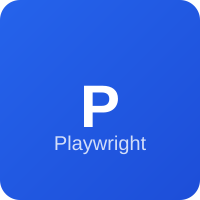
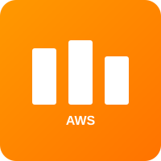
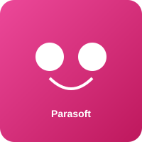
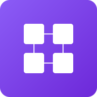
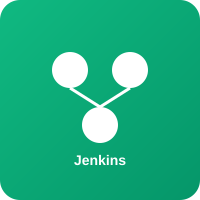

Playwright QE Automation
Reduced manual regression cycles from 3 days to ~4 hours with a Playwright framework integrated into Jenkins and Harness Continuous Testing.
CI/CD Automation Engineer · DevOps & QE
I build reliable delivery pipelines and quality automation for banking. From Jenkins-to-Harness migrations to Playwright frameworks, I turn complex releases into repeatable workflows.

CI/CD Automation Engineer with 4+ years of experience delivering scalable deployment pipelines and quality engineering automation for Lloyds Banking Group plc (UK) through Tata Consultancy Services.
I specialize in Jenkins and Harness CI/CD, Playwright automation, and AWS cloud services in the BFSI domain. Azure Administrator (AZ-104) certified, with a focus on quality gates, release reliability, and collaboration with global client teams.
CI/CD pipelines with Jenkins and Harness, supported by Git and GitHub workflows.
AWS automation with CloudFormation, CloudWatch, Lambda, and S3.
Playwright QE frameworks, Parasoft service virtualization, and test automation.
Reduced manual regression cycles from 3 days to ~4 hours with a Playwright framework integrated into Jenkins and Harness Continuous Testing.
Improved deployment efficiency by ~35% through an end-to-end migration of OpenShift build and deployment pipelines from Jenkins to Harness.
Built monitoring solutions using CloudWatch, Kinesis, S3, Lambda, Security Hub, and Macie.
Automated AWS infrastructure with CloudFormation for reproducibility and scalable operations.

Architected and deployed a scalable QE automation framework leveraging Playwright with real-time quality gates integrated into Jenkins CI/CD pipelines. Integrated Harness Continuous Testing to reduce manual regression cycles from 3 days to approximately 4 hours.
Executed end-to-end migration of OpenShift Container Platform (OCP) build and deployment pipelines from Jenkins to Harness CI/CD. Standardized release workflows across delivery teams and improved deployment efficiency by approximately 35%.

Built comprehensive monitoring and logging solutions using CloudWatch, Kinesis, S3, Lambda, Security Hub, and Macie. Fetched unstructured logs, filtered and structured them, stored in S3 with KMS encryption, and responded to security findings proactively.

Created stubs and mock APIs using Parasoft CALisa service virtualization tool. Tested APIs with Postman, enabling agile testing without dependency on external services. Accelerated QA cycles and improved test reliability.

Wrote infrastructure code using AWS CloudFormation to provision and manage cloud resources in a declarative manner. Enabled reproducibility, scalability, and version-controlled infrastructure deployments.

Developed and maintained 15+ Jenkins CI/CD pipelines across Dev, Test, UAT, and Production with Git integration, SonarQube quality gates, and Nexus3 artifacts. Performed Git operations (push, pull, clone, merge) and triggered code pipelines. Proficient in analyzing production issues and providing root cause analysis and fixes.
System Engineer — DevOps & CI/CD Automation Engineer — Oct 2022 to Present
Working with Lloyds Banking Group plc on enterprise DevOps and QE automation
Credentials across cloud platforms, continuous delivery, and software engineering.
Google Cloud
Harness Inc
Harness Inc
Microsoft Azure
Pegasystems
Pegasystems
Coding Ninjas & HackerRank
Guvi Geek Network, IITM Research Park
Vellore Institute of Technology — 2020-2022
CGPA: 8.94
Vellore Institute of Technology — 2017-2020
CGPA: 8.59
Have an opportunity or an engineering challenge to discuss?
Send an email